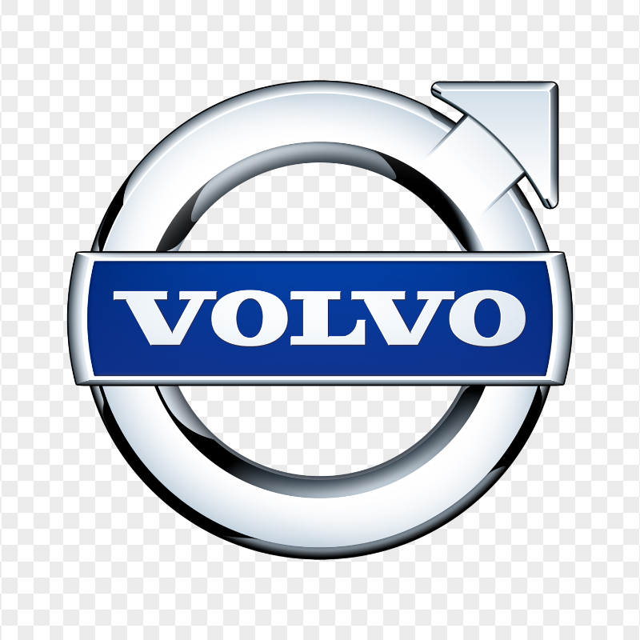
(ein Volvo-Auto, Vollbild)
Sprechernotiz: Nichts sagen. Ernst schauen, kurz warten. Dann weiterklicken.
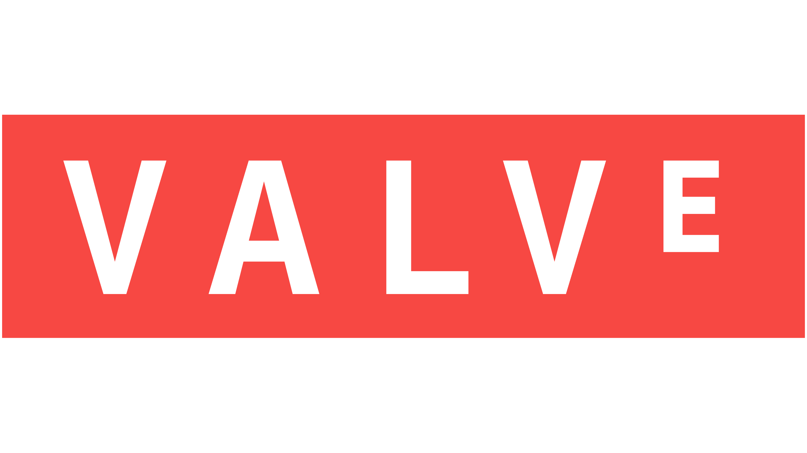
(Valve Logo)
Ups. Falsche Firma.
Das hier ist Valve.
Sprechernotiz: „Entschuldigung, Verwechslung. Volvo baut Autos, Valve baut Ventile im Kopf.“
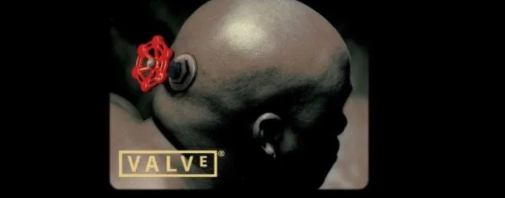
(Mr. Valve: Mann mit Ventil am Kopf)
Das ist Mr. Valve.
- Er begrüßt uns seit 1998 in vielen Valve-Spielen.
- Niemand weiß genau, wer er ist.
- Er sagt nie ein Wort. Er schaut nur.
Sprechernotiz: Mr. Valve ist der Mann aus dem Valve-Intro (Half-Life, Orange Box, Alyx). Wer er wirklich ist, ist nicht sicher bekannt.
Mr. Valve — Teil 2
- Es gibt ihn in zwei Versionen.
- Mal sitzt das Ventil im Auge. Mal im Hinterkopf.
- Eins ist immer gleich: der ernste Blick.
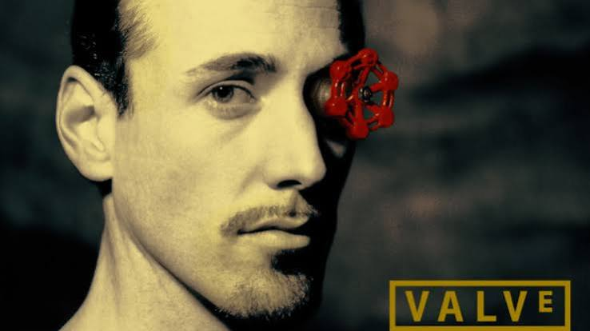
(Mr. Valve, zweite Version)
Sprechernotiz: Die zweite Version zeigen und kurz warten. Die Texte bei Bedarf an die Bilder anpassen (welche Version hat das Ventil im Auge, welche im Hinterkopf).
Warum darf ich darüber reden?
In jedem Valve-Spiel.
Wichtig: Die 1.000 Stunden sind der gewünschte Präsentationswitz, keine überprüfte Tatsachenbehauptung. Falls nötig: „Ich beantrage hiermit die akademische Anerkennung meiner Steam-Bibliothek.“
Valve verkauft nicht nur Spiele.
- Spiele: eigene Hits (dazu gleich mehr).
- Steam: Shop, Bibliothek und Community an einem Ort.
- Kundenservice: Du hast ein Problem? Schreib ihnen — sie lösen alles.
- Regionale Preise: Der Preis passt sich dem Land an.
- Extras: Cloud-Speicherstände, Family Sharing, Workshop für Mods.
(Steam Logo)
Sprechernotiz: Pointe: Andere verkaufen ein Spiel. Valve baut dazu einen Service, bei dem man gerne bleibt. Das ist die Kundensicht und ein Witz mit wahrem Kern: Valve ist bekannt für faire Regeln, zum Beispiel bei Rückgaben. Wie schnell der Support im Einzelfall antwortet, erleben Leute unterschiedlich.
Valve findet gute Ideen — und stellt die Leute ein.
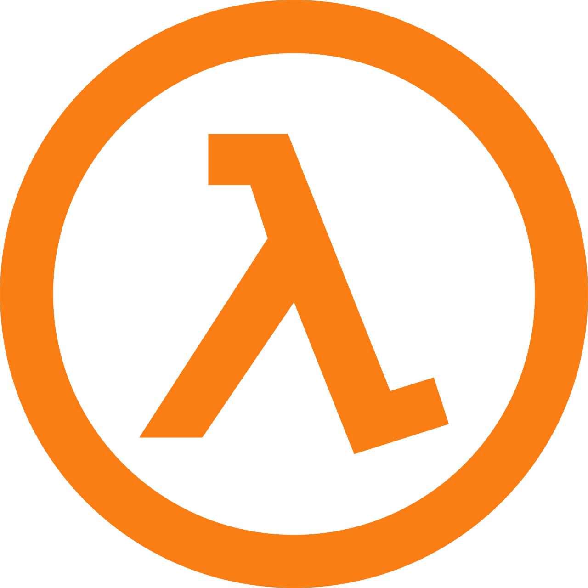
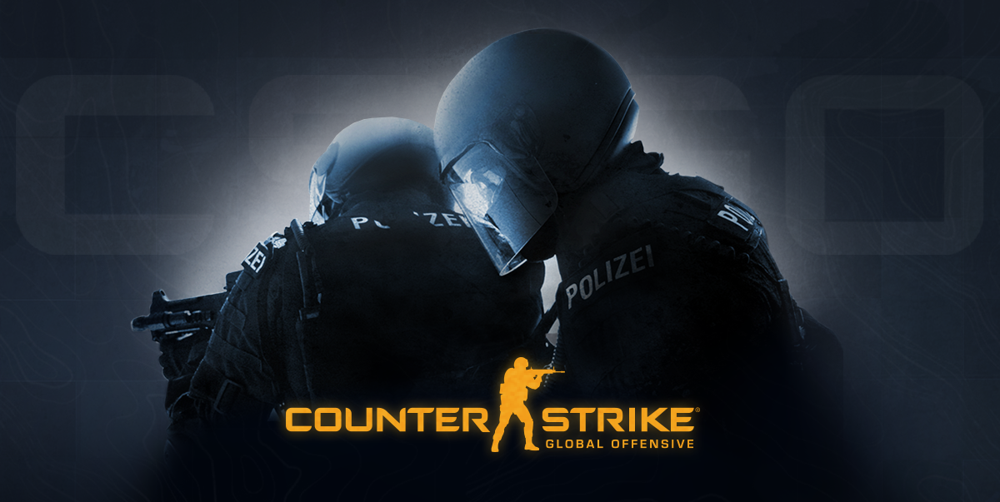
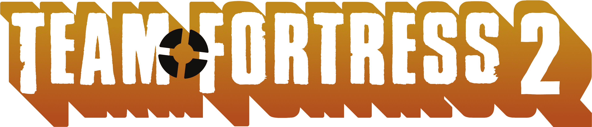

Auch dabei: Day of Defeat (Mod) und Left 4 Dead (Valve kaufte das Studio Turtle Rock).
Sprechernotiz: Das Muster ist immer gleich: Die Community baut etwas Gutes, Valve erkennt das Potenzial und holt die Leute ins Team.
Der Launcher-Bossgegner
Steam ist so stark, weil die anderen oft selbst Fehler machen:
- Epic: Exklusiv-Deals. 2019 verschwand Metro Exodus kurz vor dem Start von Steam. Viele Käufer waren sauer.
- EA: Verließ Steam 2011 mit eigenem Launcher (Origin). Seit 2019 ist EA zurück.
- Ubisoft: Auch auf Steam brauchst du oft noch ein Ubisoft-Konto. Noch ein Login!
Und ich als Kunde? Meine Bibliothek hat 500 Spiele. Ich spiele drei. Danke, Steam-Sale.
Sprechernotiz: Das ist Satire und meine persönliche Meinung, kein objektives Ranking.
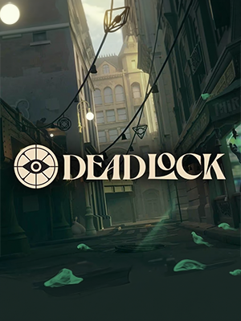
(Deadlock Logo / Intro-Bild)
Deadlock BETA
- Ein Helden-Shooter mit MOBA-Elementen.
- Status: Noch Beta. Nicht öffentlich. Du kommst nur mit einer Einladung rein.
- Kein Release-Datum.
- Im Oktober 2026: über 300.000 Spieler gleichzeitig (Rekord).
Sprechernotiz: Deadlock ist weiter eine geschlossene Beta ohne öffentlichen Zugang. Spielerzahlen laut SteamDB-Berichten (Oktober 2026), vor dem Vortrag kurz prüfen.
Jeder Held ist ein kleines Kunstwerk.
- Eine Oma auf einer Bank (Baba).
- Ein Rattenkönig mit Krone (Rat King).
- Ein Wesen aus Schleim (Viscous).
- Und alle anderen: eigenes Design, eigene Geschichte.
BETA Noch nicht öffentlich. Spielbar nur mit Einladung.
Sprechernotiz: Bild im Hintergrund: Collage aller Helden-Porträts. Das Update „The City Never Sleeps“ (29. September 2026) brachte sechs neue Helden: Rat King, Baba, Violet, Nurse Harrow, Solomon, Deadman Danny.
Valve baut die Zukunft des Gamings.
- Steam Deck: Steam-Spiele zum Mitnehmen.
- Steam Machine: Steam im Wohnzimmer.
- Steam Controller: gebaut für Steam.
- Steam Frame: die VR-Brille von Valve.
- SteamOS: Alle sind von Microsoft genervt. Also baut Gabe Newell einfach sein eigenes Betriebssystem.
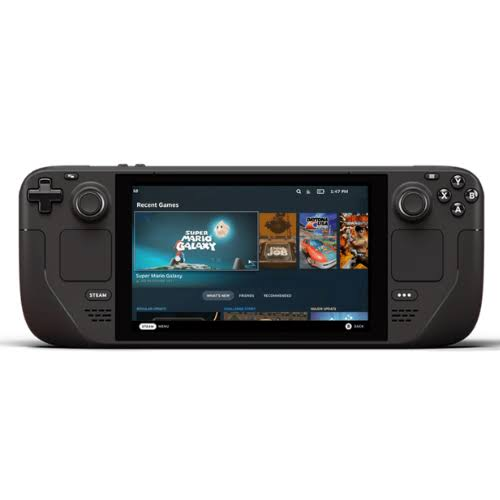
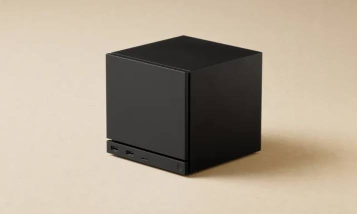
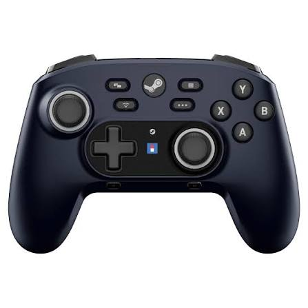
Sprechernotiz: Es geht um Strategie, nicht um Preise: tiefere Erfahrung für die Kunden, vom Handheld bis VR. SteamOS basiert auf Linux; Windows-Spiele laufen dort dank Proton. Wie erfolgreich die Hardware wird, ist offen.
Was ist Valves Geheimnis?
- Genies einstellen und gute Ideen aus der Community ernst nehmen.
- Kundenservice, bei dem niemand gehen möchte.
- Sich nicht selbst ins Bein schießen — das machen die anderen.
Das ist eine ziemlich gute Strategie.
Weniger Reibung.
Mehr Spiele.
Danke! Fragen? Beschwerden bitte an den Steam-Support.
Sprechernotiz: Mit der Pointe enden. Bei Fragen: Die Kritik an der Konkurrenz ist meine persönliche Meinung.